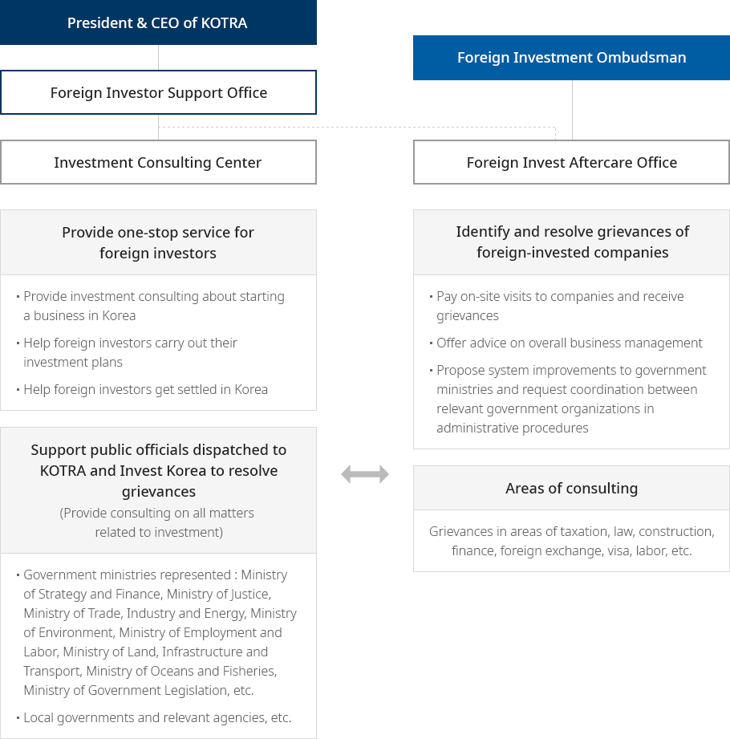

Organizational Chart
- Home
- About Us
- Organizational Chart
The grievance settlement body, headed by the Foreign Investment Ombudsman within KOTRA,
supports grievance resolution in close cooperation with the Investment Consulting Center.
supports grievance resolution in close cooperation with the Investment Consulting Center.
Organizational configuration

Large view of images
- President & CEO of KOTRA
- Foreign investor Support Office
- Foreign Invest Aftercare Office
- Identify and resolve grievances of foreign-invested companies
-
- Pay on-site visits to companies and receive grievances
- Offer advice on overall business management
- Propose system improvements to government ministries and request coordination between relevant government organizations in administrative procedures
- Areas of consulting
- Grievances in areas of taxation, law, construction, finance, foreign exchange, visa, labor, etc
- Foreign Invest Aftercare Office
-
Investment Consulting Center
- Provide one-stop service for foreign investors
-
- Provide investment consulting about starting a business in Korea
- Help foreign investors carry out their investment plans
- Help foreign investors get settled in Korea
- Support public officials dispatched to KOTRA and Invest Korea to resolve grievances (Provide consulting on all matters related to investment)
-
- Govement ministries represented : Ministry of Strategy and Finance, Ministry of Justice, Ministry of Trade, Industry and Energy, Ministry of Environment, Ministry of Employment and Labor, Ministry of Land, Infrastructure and Transport, Ministry of Oceans and Fisheries, Ministry of Government Legislation, etc.
- Local governments and relevant agencies, etc.
- Foreign Investment Ombudsman
- Foreign Invest Aftercare Office
- Identify and resolve grievances of foreign-invested companies
-
- Pay on-site visits to companies and receive grievances
- Offer advice on overall business management
- Propose system improvements to government ministries and request coordination between relevant government organizations in administrative procedures
- Areas of consulting
- Grievances in areas of taxation, law, construction, finance, foreign exchange, visa, labor, etc